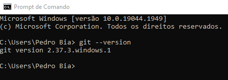
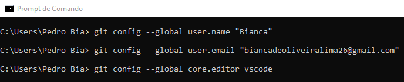
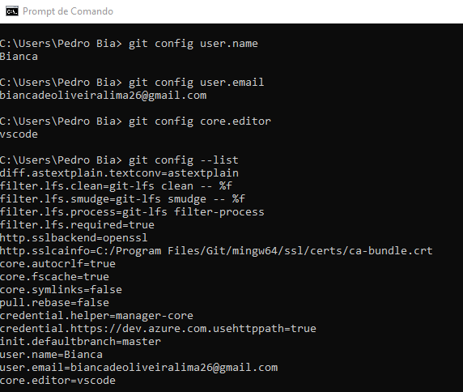
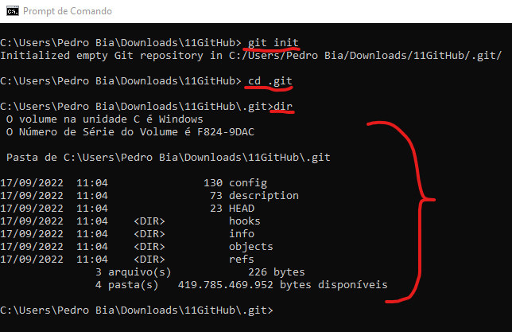
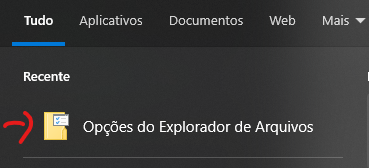
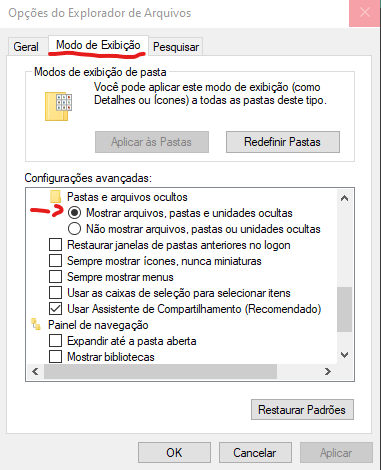

O que é, para que serve e como funciona - GIT/GITHUB
É um sistema de versionamento, ou seja em caso de bugs você consegue voltar para versão anterior sem o bug, também consegue trabalhar em equipe com várias pessoas editando o mesmo arquivo
Instalando o Git
Entrando no site do Git
No caso de windonws vá em pront de comando para verificar se realmente não tem o Git instalado
Em pront de comando digite git --version e rode para ver a resposta
Se mostrar a versão significa que já está instalado, se disser que não encontro significa que precisa ser instalado
No caso de não estar intale o pacote compatível e depois de o mesmo comando na pront de comando e vejá se já está instalado

Configurando o Git
Sempre que houver uma alteração no projeto o Git automáticamente vai associar ao usuário responsável pela alteração
Em pront de comando coloque as seguintes informações para configurar com seu dados

Para verificar se os dados foram salvos digite as seguintes informações em pront de comando

Iniciando um repositório - Git
Comandos básicos de pront de comando
cd C:/users/Nome do usuário é a pasta raiz do seu sistema
cd Desktop/ é a pasta de área de trabalho
dir ele lista os arquivos que estão dentro da pasta
tree /f ele monta uma árvore com os arquivos que tem (ATENÇÃO: Nunca de este comando na raiz do seu sistema, pois vai travar o seu pc)
cd ../ ele volta um diretório
Iniciando repositório
Entre na pasta desejada
git init para iniciar o repositório
Uma pasta oculta vai ser criada
Veja o que há na pasta por pront de comando ou abilite a opção de visualizar arquivos ocultos



Branch,README e Commit - Git
Branch são versões diferentes do seu sistema. O Branch principal do sitema se chama Master
Commit é quando faz alterações no sitema e envia para o Git e o guite salva apenas as alterações. o Commit geralmente é acompanhado de um comentário que esplica o que você fez
README é o arquivo que todo programador que entra no projeto vai ler. Ele é o arquivo principal do projeto